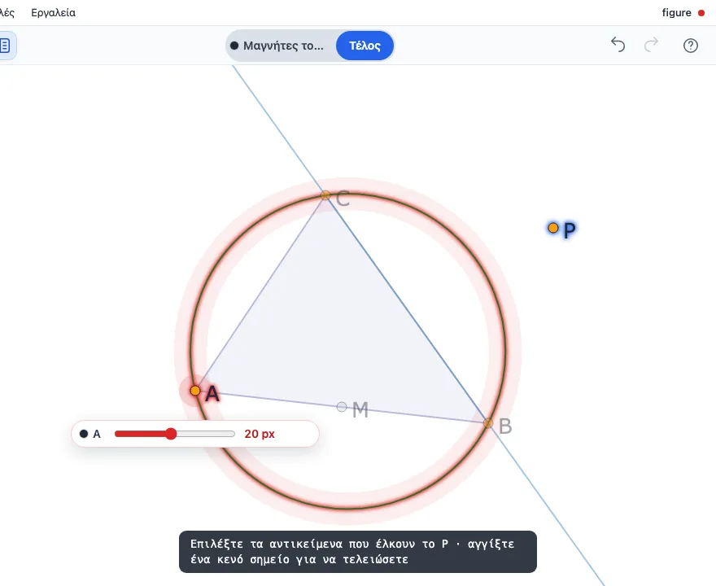

Μαγνήτες, πινέζα και ελατήριο
Μαγνήτες
Ένα μαγνητισμένο ελεύθερο σημείο κολλά στα επιλεγμένα αντικείμενα όταν το σύρετε κοντά τους, χωρίς να δένεται με αυτά.

- Επιλέξτε το ελεύθερο σημείο, έπειτα Μαγνήτες. Το υπόλοιπο σχήμα καλύπτεται από ένα πέπλο.
- Αγγίξτε κάθε αντικείμενο που έλκει (σημείο, ευθεία, κύκλος, κωνική, καμπύλη, λίστα): γίνεται κόκκινο, με αρχική έλξη 20 px. Το σημείο και τα εξαρτώμενά του εξαιρούνται.
- Ρυθμίστε την έλξη του επιλεγμένου μαγνήτη με τον δρομέα της κάρτας του: Καμία (αφαιρεί τον μαγνήτη), 1 έως 1000 px, Παντού. Η ζώνη έλξης κάθε μαγνήτη σχεδιάζεται με απαλό κόκκινο.
- Τελειώστε με ένα άγγιγμα σε κενό σημείο, το Τέλος ή το Esc.
Το σημείο μπορεί να συρθεί κατά τη ρύθμιση για δοκιμή. Κάθε ρύθμιση είναι ένα βήμα αναίρεσης.
Πινέζα
Καρφίτσωμα στην οθόνη (ελεύθερο σημείο): το σημείο κρατά τη θέση του στο παράθυρο, και όχι τις συντεταγμένες του, όταν γίνεται ζουμ, μετακινείται η προβολή ή, σε 3D, περιστρέφεται το σύστημα συντεταγμένων. Παραμένει μετακινήσιμο. Δεύτερο πάτημα: αφαίρεση. Το ίδιο πλαίσιο ελέγχου βρίσκεται στην ενότητα Σημείο του πλαισίου ιδιοτήτων.
Ελατήριο
Η Κίνηση (σημείο πάνω σε ευθεία, τμήμα, ημιευθεία, κύκλο, τόξο, πολύγωνο, κωνική ή γεωμετρικό τόπο, ή δρομέας) βγάζει κάτω από το σημείο, ή κάτω από τη λαβή του δρομέα, ένα ελατήριο που καταλήγει σε μια μπίλια.
- Τραβώντας την μπίλια και αφήνοντάς την, το αντικείμενο ξεκινά· κατά το τράβηγμα, ένα φάντασμα του σημείου ή της λαβής δείχνει ήδη την κίνηση.
- Μήκος: ταχύτητα, σε εμφανιζόμενες διαβαθμίσεις (px/s σε ευθεία, πολύγωνο ή κωνική· °/s σε κύκλο· % σε γεωμετρικό τόπο ή δρομέα).
- Πλευρά: φορά· το αντικείμενο ξεκινά αντίθετα από την κατεύθυνση του τραβήγματος: ένας δρομέας που τραβιέται προς τα αριστερά (προς τα κάτω αν είναι κατακόρυφος) αυξάνεται.
- Εγκάρσια σε μια ευθεία ή σε έναν δρομέα (πάνω από 45°): μπρος-πίσω. Αλλιώς, το αντικείμενο κάνει κύκλους.
- Κάτω από την πρώτη διαβάθμιση: διακοπή.
Σε ένα αντικείμενο που ήδη κινείται, το ελατήριο βγαίνει τεντωμένο στην τρέχουσα ταχύτητα. Δεύτερο πάτημα στο : το ελατήριο μαζεύεται. Ακριβής ταχύτητα, αντίστροφη φορά, διακοπή στο άκρο: ενότητα Κίνηση των ιδιοτήτων.